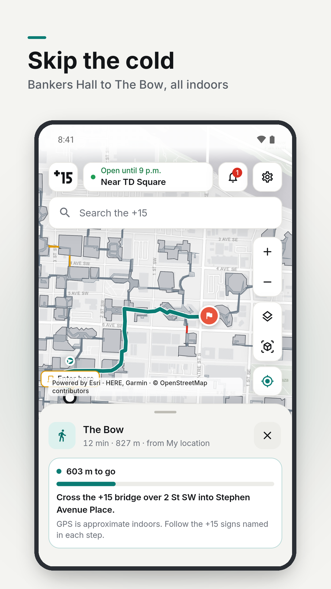
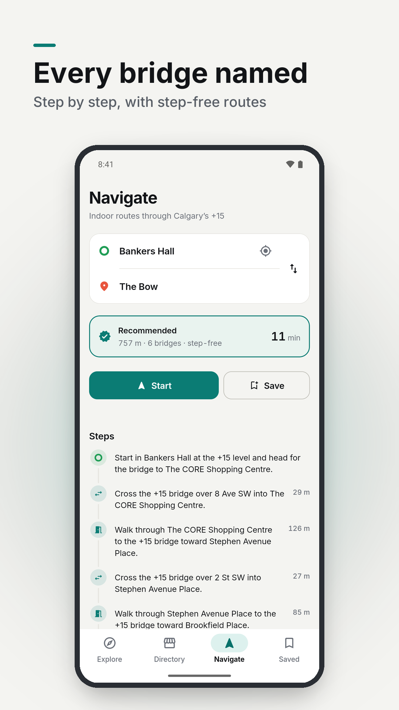
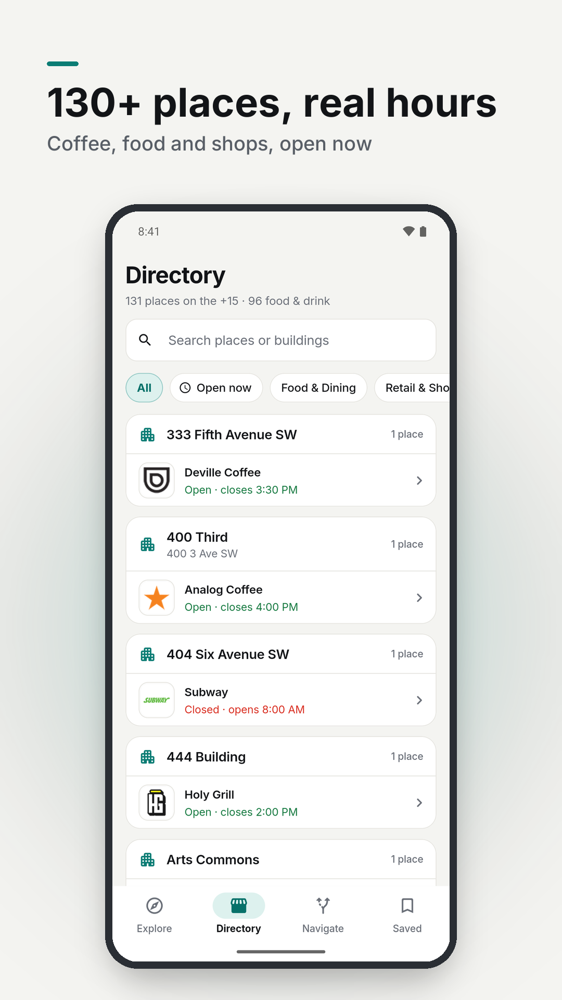

The Calgary +15 map that walks you there, indoors
It’s −30°. You’re in Bankers Hall. Your meeting is in The Bow. Plus 15 finds the indoor route through Calgary’s +15 skywalk and names every bridge on the way: “over 8 Ave SW into The CORE”.
Get it on Google PlayFree for Android. No account, no ads, no tracking.



What it does
- Search any building, shop or coffee spot in downtown Calgary.
- Get an indoor walking route that names every +15 bridge, with step-free options and a Mostly indoors choice for the coldest days.
- Find the nearest +15 entrance from the street. Coming from outside downtown, your maps app takes you to the best entrance and Plus 15 guides you inside.
- See +15 hours, bridge closures and opening hours for 130+ shops, food courts and services.
- 109 buildings and 80 bridges: 16 km of heated walkways, 15 feet above the street.
Questions people ask
What is the Calgary +15?
The +15 (Plus 15) is one of the world’s largest pedestrian skywalk systems: enclosed bridges about 15 feet above the street that link most downtown office towers, malls and hotels.
When is the +15 open?
The City lists 6 am to 9 pm on weekdays and 9 am to 7 pm on weekends and holidays, and the walkways are closed on December 25. Some buildings and bridges keep shorter hours.
How do I get into the +15 from the street?
Most towers have an escalator or elevator up to the +15 level near the main doors. In the app, tap Find nearest +15 entrance and it walks you there along the sidewalk.
Is there a Plus 15 map for iPhone?
Not yet. Plus 15 is on Android for now.